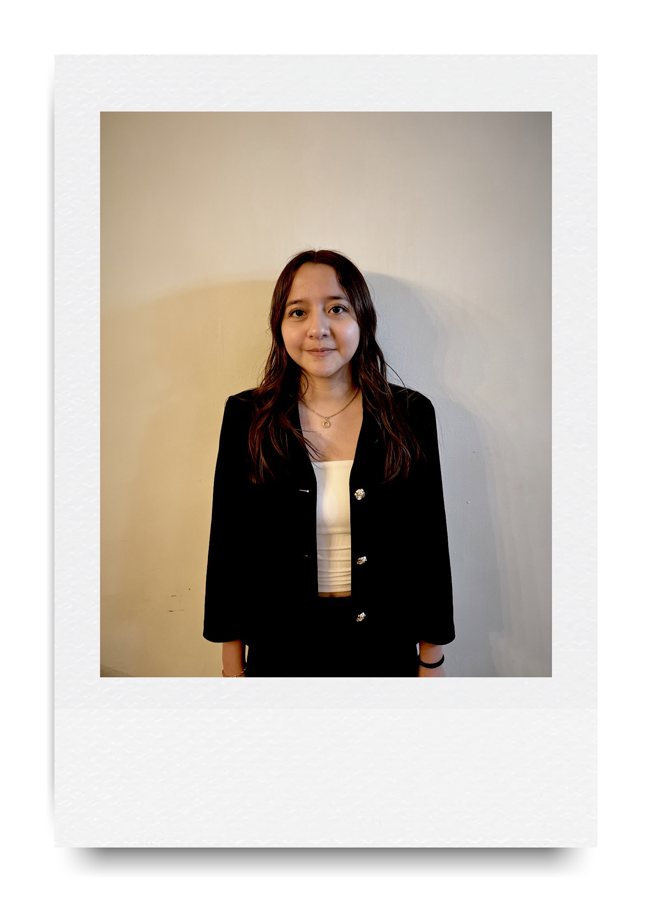

Economista, consultora y fundadora del PPB. Ana Sofía Moriel encabeza la candidatura presidencial 2026 con una visión clara: un México liberal en lo económico, libertario en lo social.
Biografía
Ana Sofía Moriel nace en la Ciudad de México en 1988. Economista de formación y consultora por vocación, ha dedicado más de una década a impulsar iniciativas de desarrollo económico, emprendimiento femenino y políticas públicas con evidencia, tanto en México como en América Latina.
Tras pasar por la Secretaría de Economía, el IMCO y el Banco Interamericano de Desarrollo, dirigió Fundación Impulsa, una ONG dedicada a financiar y mentorear emprendimientos liderados por mujeres en comunidades de menor ingreso. Esa experiencia la convenció de que el país necesitaba un proyecto político nuevo, sin las ataduras ideológicas de los partidos existentes.
En 2024 convoca a un grupo de académicas, estrategas y líderes sociales para fundar el Partido Progreso y Bienestar. Hoy encabeza la candidatura presidencial con la convicción de que México puede ser próspero y justo al mismo tiempo.
Trayectoria
Formación
Visión
México no tiene por qué elegir entre libertad económica y justicia social. Yo creo en un país donde el mercado funcione para todos, y donde cada quien pueda construir su propia vida sin imposiciones. Ese es el México que quiero presidir.
— Ana Sofía Moriel
El PPB es un proyecto colectivo. Descubre quiénes más están construyendo este movimiento.